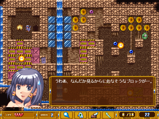
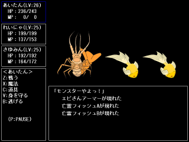
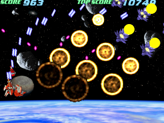
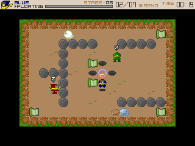

ここではＤＸライブラリを利用して頂いている皆様の作品をご紹介させて
いただくページです。
(現在管理人の時間的余裕が少なくなっている為、募集はしておりません)
Rosenkreuzstilette（ローゼンクロイツ スティレッテ）
 |
erka:esさんが制作された面クリア型 横スクロールアクションゲームです。 マギ(魔力使い)である主人公のティアが、帝国に対し武装蜂起をしたマギのみで構成される戦闘組織「エルカーエス(RKS)」の仲間達を止める為に戦います。 ティアは初期状態では水平に飛んでいく魔力弾のみを武器としますが、 各ステージのボスとなっている仲間を倒すと、倒した仲間の能力を以降のステージで使用することができるようになります。 ボスにはそれぞれ苦手な能力があるので、自由に選択可能な８つのステージを上手に選ぶと難易度の高いボスを楽々倒すことができます。 既にお気づきの方も多いと思いますが、要は○ックマンです。 操作感覚もとても良く再現されていて、元の良さを壊さず今風に再構築されているので、原作が楽しめた方はほぼ確実にツボに嵌ると思います。 こちらの作品は同人ソフトとして有料で配布されていますが、４ステージまでプレイできる体験版もありますので、気になった方は是非遊んでみて下さい。  |
空色の風
 |
おー社さんが制作された弾幕シューティングゲームです。 魔女の森に迷い込んでしまった天使の風花が「天使の羽」を狙う人たちと戦うことになります。 全３ステージなのでちょっとゲームをプレイしたい方にお勧め。 ただ、隠し要素が幾つかあるということで、それらを全て展開しようとすると大変かもしません。 とりあえず、高難易度である「CRISIS」はかなり難しいので、クリア出来た方は・・・宜しければ管理人までプレイデータを送ってやって下さい。m(_ _;m(どのようにクリアするのか拝見してみたいです)  |
プリンセスラナ
|  |
Mynkさんが制作された固定画面型アクションパズルゲームです。 冒険に憧れて城から逃げ出したお姫様「ラナ」の冒険者ギルドでの日常(?)が描かれたソフトです。 ラナは目の前にブロックを出現させたり、消したりする能力と、魔力を消費する特殊技を駆使してステージ内に存在する鍵を手に入れ出口を開きクリアを目指します。 というか、ご本人も仰っていますが基本的にはファミコンソフトの「ソロモンの鍵」とほぼ同じルールなので、当ソフトが未経験の方でも直ぐに操作に慣れることができますが、経験済みの方なら最初から上級者プレイが可能です。 そして、個人的に驚いたのがそのクオリティです。当初は有料にする予定だったというのも頷ける完成度とボリュームとなっています。 この言葉に興味を持たれた方も、スクリーンショットに興味を持たれた方も、久しぶりに「ソロモンの鍵」をプレイしたい方も、「ソロモンの鍵って何？」と思われた方も是非プレイしてみて下さい。  |
撃墜王☆スラットファイア
 |
たこやっこさんが制作された横スクロールシューティングゲームです。 プレイヤーは撃墜王ヒース・マークラードとなり愛機スラットファイアを駆使して１ステージ辺り１０００を越える敵機に挑むことになります。 特徴はその敵の数以外にも同時に３種類戦場に持ち込める武器の選択、開発、スラットファイアの攻撃力、防御力、機動力、特殊能力の強化等カスタマイズ要素の多さにもあります。 総撃墜数や強化パラメータの度合い、被弾数等によってステージクリア時にランクが付き、クリア条件によって開発可能な武器・パーツが増えたり、挑戦可能なステージが増えたりとやり込み要素も万全です。 骨太なゲームを望まれる方は是非。(ただし健康面を考慮して実装されたプレイ時間制限機能付き(汗))  |
ＪＵＭＢＬＥ！
 |
Jinpachiさんが制作された落ちものパズルゲームです。 フィールドに定期的に撒かれる種ブロックをひたすら正方形に並べて壊していきます。 画面上部までブロックが積まれてしまうとゲームオーバー。 単純ですがレベルが上がるとブロックの種類が増えるので、同じ種類のブロックを４つ探すのと一つの場所に集めるのが大変になってきます。 上記ルールでクリアを目指すアーケードモードの他に、特殊なルール上で制限時間内にどれだけ得点を稼ぐことができるかを競うチャレンジモードと、チャレンジモードから制限時間が増減するシステムを抜いたタイムアタックモードがあります。 ハードな落ちものパズルに飢えている方は是非。 Melty Brain |
ＤＲＡＧＭＥＮＴＳ ＬＯＡＲ
 |
TEAM NAVAさんが制作されたＲＰＧです。 雪に閉ざされた小さな村「ネフィカルオラ」とその周辺を舞台に、主人公エイル、アーニャ、シルベンの二人と一匹と、村人との物語が展開されるほのぼの(一部ピリッとした)ＲＰＧです。(戦闘もあります) この作品はプロローグ的なもの、とのことで一度のプレイ時間は５～７時間ですが、マルチエンディングとなっているので全てのエンディングを見ようと思った場合は十分なプレイ時間となります。 イベントシーンが丁寧に作られていているので、登場キャラクターに魅力を感じれば嵌って一気にプレイしてしまうかもしれません。(^^; 尚、こちらの作品はプログラムが公開されています。ＲＰＧのプログラムに興味がある方は是非。  |
ダコダコクエストⅡ
|  |
しゅうさんが制作されたＲＰＧです。ダコダコクエストの続編となっています。 モンスターを率いて平和な世界を乱そうとする悪の宗教ダコダコ教の魔の手から人々を救う為、勇者あいたんが旅立ちを決意する。という、熱い物語です。 ストーリーや世界観は前作との繋がりはありませんので、いきなりⅡからプレイしても大丈夫です。 前作の一対一戦闘から複数キャラ戦闘への変更、ボリュームも前作の３倍と、正にド○クエⅠからⅡへの変化と同等のパワーアップが図られています。 前作同様、総合的なバランスが良く、ストレス無くプレイすることが出来ますので、ダコダコクエストⅠを楽しめた方は間違いなくⅡも楽しむことが出来ます。 愛の海で抱かれたい official home |
ダコダコクエスト
 |
しゅうさんが制作されたＲＰＧです。 平和なクイーフ国に突如現れた魔王によってダコダコな日々を強いられている人々を救う為、勇者あいたんが旅立ちを決意する。という､熱い物語です。 ド○クエⅠをベースとしつつもオリジナルの要素が沢山あり、レベル上げに掛かる時間や敵の強さのバランスも良いので、ストレス無く最後までプレイ出来ます。 ゲームとして楽しいＲＰＧをプレイしたい方にお勧めです。 愛の海で抱かれたい official home |
CUIRPG2.0
 |
JEXさんが制作されたＲＰＧです。 全てが文字で表現されている所が特徴的ですが、中身は至って硬派なＲＰＧです。 職業という概念があり、職によってＬＶアップ時の上昇パラメータや習得魔法が変わるので、どんなパーティにするかが重要となります。(ドラゴンクエスト３風とのこと) 戦闘面のバランスは「殺られる前に殺れ」、如何に素早く(少ないターンで)敵を倒すかが重要になっていて、コマンド一つ、 攻撃対象の選択一つ間違えただけでパーティが危機に陥ることもある高難易度になっています。(序盤はそんなことはありませんが) その為クリアを目指すだけでもかなり歯応えがあり、またＬＶアップによるパラメータ上昇の嬉しさもストーリーに重きを置いて戦闘は易しめで、という設計のＲＰＧには無いものがあります。 AMAZONIUM official home |
し～ぽんはいっぱい食べる！
 |
同人サークルのわに屋さんが制作された二次創作作品のミニゲームです。 ＴＶアニメ「宇宙のステルヴィア」の主人公が次々と平らげるハンバーガーをプレイヤーが作るゲームです。 「Ｚ」「Ｘ」「Ｃ」キーに対応したハンバーガーの具材を画面に表示されている通りに積み上げて、ハンバーガーを時間内に完成させることを目指します。 当然１個完成させる毎にノルマ(積み上げる具材の数)も増えて行くので、だんだんあり得ないサイズのハンバーガーになっていきます。(笑)  |
BIB2 -the 2nd Syndrome-
 |
秘密結社ロジックソフトさんが制作されたボス戦オンリーのシューティングゲームです。 天才プログラマが作成した世界経済を崩壊させるほどのウイルスプログラム(ボス)を倒すのが目的です。 機体(?)と装備するサブウェポンを選択した後、多彩な攻撃手段を用いて襲い掛かるウイルスとの戦闘が始まります。 通常の難易度でもかなり歯応えがあるのですが、やっとの思いで全ステージクリアを果たすと更に高い難易度を選択できるようになり、 ウイルスの攻撃が激しくなると共に低い難易度では存在しなかった攻撃も繰り出してきます。 更にその難易度もクリアすると・・・というのは私はクリア出来ていないのでわかりません。(汗) シューティングゲームの腕に自信のある方は是非挑戦してみて下さい。 秘密結社ロジックソフト |
PLADZMA
 |
deervice さんが制作された縦スクロール型のシューティングゲームです。 最大の特徴はなんといっても獲得した得点がお金となって、そのお金で武器や機体を購入したり強化することが出来るという点です。 最初は弱い武器で苦戦した相手も、強力な武器を購入することによっていとも簡単に蹴散らせたりするので爽快です。 また、全ステージをクリアすると終わり、という訳ではなく継続して遊ぶことが出来るので、 ５段階ある難易度を変更して再挑戦したり、沢山ある武器をコンプリートしたりと長く遊ぶことの出来るゲームです。 スクリーンショットをご覧になれば分かる通り、かなりクオリティの高いゲームですので興味が沸いた方は是非。 尚、このゲームは有料となっていて、無料バージョンはステージ２まで遊ぶことが出来ます。  |
Bloody Blade
 |
GCPC さんが制作された擬似３Ｄダンジョン探索型アクションゲームです。全８ステージの大ボリューム。 マウスカーソルを左クリックした状態で敵の上を素早くスライドさせる事によって 「斬る」というアクションを行う、 非常に直感的なシステムが戦闘の基本となっていて、これが爽快だと感じてしまった場合、早々止められなくなります。(^^; 重量感の伴うボール式マウスが「剣を振っている」という感覚にぴったりなので、もしお持ちでない方は是非２・３百円で叩き売りされているボール式マウスを購入しに行きましょう。 最初は慣れないシステムに戸惑っても３分もプレイすれば慣れますので、興味が沸いた方は是非挑戦してみて下さい。 Game Create Practice Club |
Deltalischar
|  |
Zhin さんが制作された横スクロールのシューティングゲームです。 最大の特徴は自機に旋回能力を持つ人型形態と、特殊兵器を撃てる飛行形態の２形態があるということで、状況によって形態を使い分ける必要があります。(上手な方なら片方の形態だけでも攻略可能ですが(^^;) ３タイプの自機は何れも個性的な兵器を持っていますので、一番楽な攻略法でクリアした後は、局面によっては非常に不利になる兵器一本で無理矢理クリアしようとしてみるという楽しみ方もあります。 また、リプレイデータを募集中とのことですので、腕に自信のある方は是非挑戦してみて下さい。  |
Win FLIXX(うぃん ふりくす)
 |
satos さんが制作された、知る人ぞ知る Bio100% 作品の一つである『FLIXX』のWindows移植版です。 『いわゆる的当てゲームです。円盤をなげて的（モグラ－）にあてるとその面をクリアできるという、シンプル極まりないもの。幼児から大人まで、幅広い年齢層で気軽に楽しめるゲームです。』(ゲーム説明から引用させて頂きました) 息抜きで始めるとつい何度もチャレンジしてしまう面白さがあります。 また、DOS版そのままの移植に留まらず、インターネットランキング機能や、DOS版には無いステージやボーナスが用意されています。 Win FLIXX ダウンロードページ |
Stoic
 |
平尾真一 さんが制作されたシューティングゲームです。 操作ボタンは攻撃・決定ボタンの只一つ、スコアアイテムを漏らさず壊せばボーナス、 後は攻撃を避けながらひたすら敵を蹴散らすだけ！ そんな感じの、説明書を見ずにいきなり始めても何も困らない、 シューティングゲームの基本を貫いた、という印象を受けるシンプルな造りになっています。 シューティングゲームが好きな方には勿論、複雑なルールを理解・駆使して 遊ぶゲームよりも頭を使わず直感でクリアして行くゲームが好き、という方にもお勧めです。 bit-culture.net |
みしょみしょ
|  |
ゲームクリエイターチーム ＧＲＣ さんが制作されたゲームです。 忍者の頭領が手に入れた敵城の密書を見習い忍者３人が集める、というゲームです。 何故既に手に入れている筈の密書を見習い忍者が集める必要があるのか・・・？ この矛盾した文章が気になる方は是非プレイしてみて下さい。(^^ 尚、個人的には取扱説明書を見るよりソフト上のHOW TO PLAYを ご覧になられることをお勧めします。(百聞は一見にしかず！)  チーム ＧＲＣ さんのその他の作品 |
ＢＲＥＡＫ ＦＡＳＴ！
 |
Ｒ－無印 さんが制作された時間制限型スコアアタックシューティングゲームです。 プレイヤーは４種類のショットと素早く敵を一掃することで新手を次々と 出現させる所謂「早回し」や、出現してからなるべく速く倒すことによって 高得点が得られるシステム、敵を逃さず倒すことによって点効率が上がるシステムを 考慮し駆使し、２分以内に如何に得点を稼ぐかを追求します。 時間制限型シューティングのミス時のペナルティは様々ですが、こちらの ソフトは『ボタンを連射することによって復活出来る』というシステムに なっていて、ミス後も気を抜くことが出来ません。(^^; R-無印のメモ帳 |
ＳＴＡＲＧＡＺＥＲ
 |
Rxo さんが制作されたファミコン時代の伝説の○○ゲー「星をみるひと」のリメイク作品です。 プレイヤーは主人公の一人である「みなみ」を操作して殺伐とした世界を彷徨います。 システムには武器に使用回数が決まっていたりレベルという概念が存在しなかったり するＳａ・Ｇａのそれが、ＢＧＭにはファミコンサウンドが、ゲーム中に表示される フォント(文字)にはファミコン時代のエニックスやスクエア、任天堂などのフォントが、と、 これだけでも懐かしさ満載、当時を知る方はプレイしない手はないという代物ですが、 リメイクという最大の特徴を除いて一つの作品として見ても十分な出来なので原作を 知らない方、当時を知らない方でも楽しめる作品となっています。 ちなみに○○ゲーと言われる大きな原因となってしまった難解さやバグとしか思えない部分、 操作性の悪さは排除されていますので、その点で身構える必要はありません。(^^; 
|
だんえた
 |
北沢さんが制作されているローグ系ＲＰＧ(○ルネコの大冒険と言った方が分かり易いでしょうか)です。 主人公達は様々な理由で何階層もあるダンジョンに挑みます。 このゲームに『安定』というものは無く、常に消耗し続けるアイテムを求めてダンジョンを 突き進む必要があります。(アイテムは不特定の場所に落ちています) 様々なシチュエーションで最良の選択は何か、と考えさせられる奥の深いゲームです。 (ローグ系ＲＰＧ初体験の人間の感想です(^^;)) 体験版とはいえ、初心者にはプレイ可能な章を全てクリアするだけでも大変なので 十分楽しめます。 ローグ系ＲＰＧが好きな方もまだプレイした事がない方も是非プレイしてみてください。 
|
ScoreSoldier Winter Festival 2004
 |
一色順平さんが制作されたオレ弾幕縦スクロールシューティングゲームです。 このゲームの特徴は自機が弾幕を張れる事です。(その数なんと３６種類(！)) 他にも倒された敵が発射していた弾がエネルギーチップに変わるという仕様もあり、 弾の回避方法が「避ける」以外に「やられる前に倒す」という手段も用意されており、 ちまちま避けるのが嫌いな方にもお勧めです。(笑) なおこのソフトでは弾幕記述言語 BulletML を使用して全ての攻撃を表現されている とのことです。 そして ScoreSoldier のソースや、BulletML を C 言語を使って実装する 方法が一色順平さんのホームページ で公開されていますので、そちらに興味のある方も是非ご覧になってみてください。 ５９番街の部屋 一色純平 さんのその他の作品 |
ガーディアンヒロインズ
 |
同人サークル ＲＡＰＩＤ ＦＩＲＥ さんが制作された格闘アクションゲームです。 元になっているゲームはガーディアンヒーローズというゲームのようです。 格闘ゲームのようにコマンド入力式の必殺技があり、超必殺技や強力な魔法で大量の敵を バタバタと倒して行くのは爽快そのものです。 尚こちらのソフトは有料なので、入手方法は ＲＡＰＩＤ ＦＩＲＥ さんのホームページでご確認ください。 ＲＡＰＩＤ ＦＩＲＥ ＲＡＰＩＤ ＦＩＲＥ さんのその他の作品 |
Ｖｉｓｉｏｎ Ｓｈｐｅｒｅ
 |
マルコさんがお作りになられた固定画面型ＳＴＧです。 ショットの方向を自由に変更できたりダッシュがあったりと一風変わったシステムとなっています。 単純な多角形と淡い色彩、ラインで表現された３Ｄな背景等､統一感があってビジュアル的に新鮮な印象を受けます。 (とある有名フリーＳＴＧと似ているのは意図的とのこと(笑)) ダッシュで敵の背後に回って攻撃するとダメージ２倍＋撃破時の得点上昇なので慣れてくるとこれまた爽快で、 リプレイ機能もついていて自分のプレーを保存して他のＰＣで再現する事も出来るところが完成度の高さを物語っています。 高得点を狙ったり、面白プレーを保存したりするのもまた一興です。(^^ 
|
ＢＬＵＥ Ｍｉｓｃｈｉｅｆ(ブルー・ミスチーフ)
 |
同人サークル ぷろじぇくと・るびあ チーム・ウイング さんが制作された格闘アクションゲームです。 最大６人対戦が可能なシステムでの格闘ゲームが売りの作品です。 有料ソフトのためダウンロード可能なのは体験版のみとなりますが、このソフトの完成度は一見の 価値があります。ＤＸライブラリでここまで出来たのか！と驚かされる作品です。 是非プレイしてみてください。(^^ 
|
ＰＡＮＥＰＯＮ
 |
NOTFOUND さんが制作されたパズルゲームです、２５枚のパネルを自由に動かし完成させるのが目的です。 見た目が似た感じのもので、ピースが一つだけ外れていて一つづつピースをずらしながら完成させる、 というパズルゲームもありますが、こちらは完全に自由に動かせます。ですので慣れてくるとあっという間に 完成させる事が出来るので高得点を取ろうとついついはまってしまいます。(^^ なおパズルのグラフィックを自分で用意する事も出来ます。 ＰＡＮＥＰＯＮダウンロードページへ |
雪（仮）β
 |
Nao さんが制作中のすこし難易度が高めのシューティングゲームです。 水系ショットと炎系ショットを使い分けて敵の撃破を試みます。 すべてのグラフィックをご自分で描かれていてとてもパワーのある作品です。(^^ 
|
きーこんふぃぐ with DXLib
 |
おとのはねさんが制作されたキーコンフィグソフトです。現在２プレイヤーまでのキー配置の
カスタマイズが出来ます。 なお、編集して出来たコンフィグデータは実際にＤＸライブラリで使うことも出来ます。 利用例のプログラムも付属していますので是非ダウンロードしてみてください。(^^ ダウンロード |
戻る